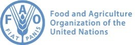

Drinking Water For All
Project conducted as a Data Analyst consultant for the NGO DWFA (Drinking Water For All), whose ambition is to give everyone access to drinking water.
DWFA has 3 areas of expertise:
- Creation of drinking water access services
- Modernization of existing water access services
- Consulting for administrations/governments on water access policies.
The association has applied for funding from a donor, presenting these 3 areas of expertise.
This new funding, if approved by the donor, could enable to invest in one of 3 areas of expertise in a country yet to be determined.
In this context, it has been requested to produce a dashboard presenting a global view of access to drinking water throughout the world. This enables to choose the country to target as soon as the donor has given its answer on the area of expertise it wishes to finance.
Tableau story requirements
- 3 dashboards were required on the Tableau story to be created with all indicators selected
on each view:
- A global view with aggregated indicators at global level.
- A continental view with indicators aggregated for the continent selected by the user.
- A national view with indicators for the country selected by the selected country.
Indicators to use
- Mortality rate due to unsafe water
- Population / population density
- Proportion of inhabitants with access to drinking water
- The country's political stability
- The evolution of these factors over time
- Indicators calculated on a national scale for the 3 areas of expertise:
- Area 1 (creation of services): graph combining the rate and urban population
rate.
Developing infrastructure when the population is concentrated in cities is not the same task as doing so with rural populations. - Area 2 (modernization of services): graph combining the rate of "basic" services (infrastructure) and the rate of quality infrastructures (qualified as "safely managed" in the data) to identify the countries with the greatest need to improve the quality of their services.
- Area 3 (consulting): graph combining the effectiveness of government policy on access to water (effective policy = low mortality rate + good access of inhabitants to drinking water services) and political stability
- Area 1 (creation of services): graph combining the rate and urban population
rate.
Data used:
- Population and political stability data are from the FAO website
- Mortality rate attributed to water and Basic safely managed water services are from the WHO website.
Partial result: